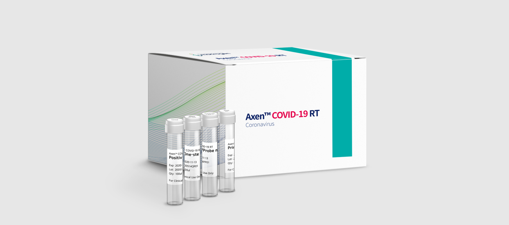
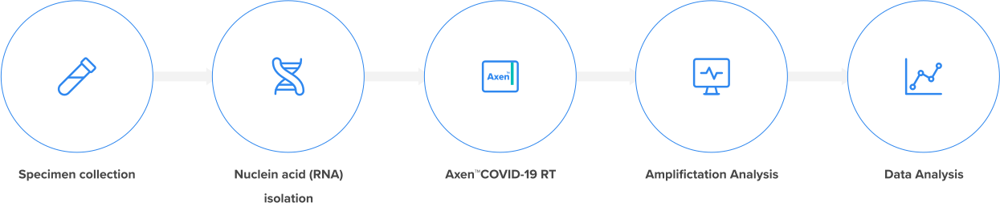

@@include('../../html/include/component/header.html')
@@include('../../html/include/common/breadcrumb-white-depth3.html',{
"depth1": "Business",
"depth2": "임상진단서비스",
"depth3": "MICROARRAY",
})
COVID-19
감염성 질환 전달을 위한 검사
Axen™ COVID-19 RT 진단키트
코로나바이러스감염증-19(COVID-19)의 감염 여부를 2시간 내 확인할 수 있는 체외진단 의료기기입니다.
해당 제품은 실시간 유전자 증폭(Real Time-PCR, RT-PCR) 방식을 활용해 미량의 신종 코로나바이러스를 가진 환자를 정확하게 선별합니다.
Axen™ COVID-19 RT 진단키트는 식품의약품안전처의 수출 허가를 승인받았으며, 유럽 체외진단시약 인증(CE-IVD)을 획득해 해외 고객을 대상으로 신뢰도 높은 진단 서비스를 제공하고 있습니다.

Specifications
| Item | Specification |
|---|---|
| Detection target | 2019-nCoV (COVID-19) |
| Target region | ORF1ab / E gene |
| Detection technology | Real-Time RT-PCR |
| Specimen type | Nasal swab / Sputum |
| PCR run time | 2 hrs |
| Compatible PCR device | CFX96™ Real-Time PCR |
Detection Target Region
- ORF1ab
- E gene
Process

Process
유전성 암 감수성 검사 (Hereditary Cancer Panel)
유전성 암과 관련된 원인 유전자를 분석해 암에 대한 유전적 위험률을 진단합니다. BRCA1/2 유전자를 포함하여 대장암의 주원인이 되는 Lynch Syndrome과 관련된 유전자 등 총 16개 유전자에 대한 변이를 분석합니다.
| Gene List | Target | Description (related cancer type) |
|---|---|---|
| APC, MUTYH | Large Intestine | Germline mutations associated with familial adenomatous polyposis (FAP) |
| BRCA1, BRCA2 | Breast Ovary | Related to breast/ovarian cancer |
| CDH1 | Stomach Large Intestine | Responsible for cell-to-cell adhesion llmplicated in cancer progression and metastasis |
| EPCAM, PMS2, MLH1, MSH2, MSH6 | Large Intestine Rectum | Related to the mismatch repair of DNA Lynch syndrome (hereditary non-polyposis colorectal cancer, HNPCC) |
| MEN1 | Endocrine System | Multiple endocrine neoplasia type 1 (MEN-1 syndrome) Familial neoplasia affecting the network of hormone-producing glands |
| PTEN | Thyroid Breast | Cowden syndrome Tumor - suppressor gene |
| RB1 | Eye | Retinoblastoma |
| RET | Endocrine System Thyroid | Proto-oncogene Multiple endocrine neoplasia type 2 Medullary thyroid carcinoma |
| TP53 | Breast Bone Etc. | Li - Fraumeni syndrome |
| VHL | Eye Kidny Central Nervous System | Tumor - suppressor gene von Hippel - Lindau Syndrome |
BRCA1/2 유전자 검사
유전성 유방암의 대표적 원인이 되는 BRCA1/2 유전자의 전 영역을 분석해 유방암 발생 위험을 진단합니다. BRCA 1/2 유전자 변이가 있는 경우 유방암 발생 위험이 급격하게 증가합니다.